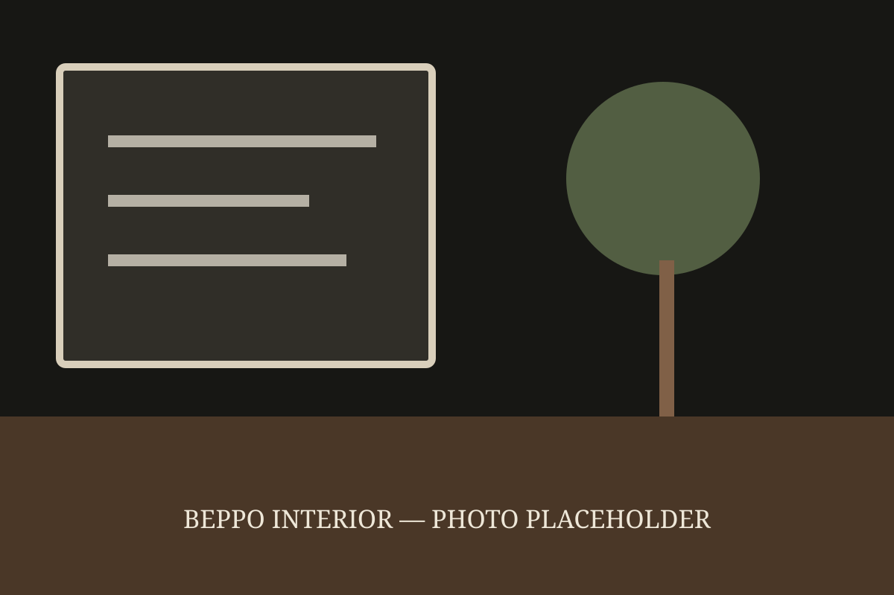
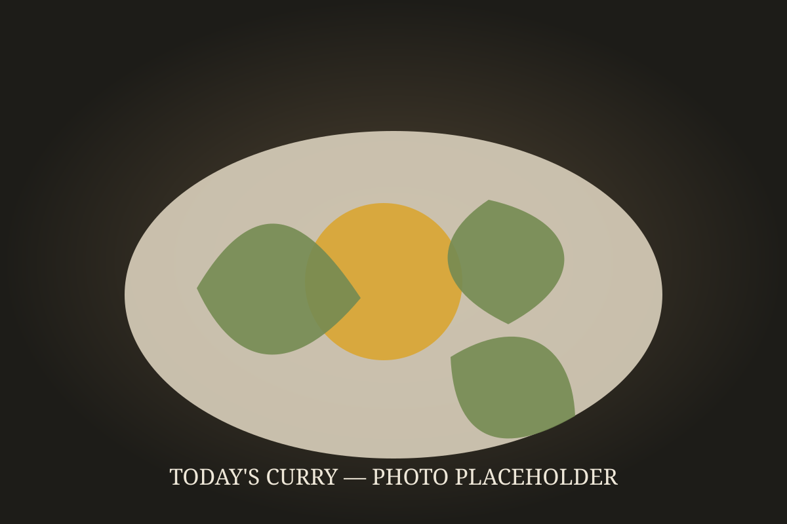
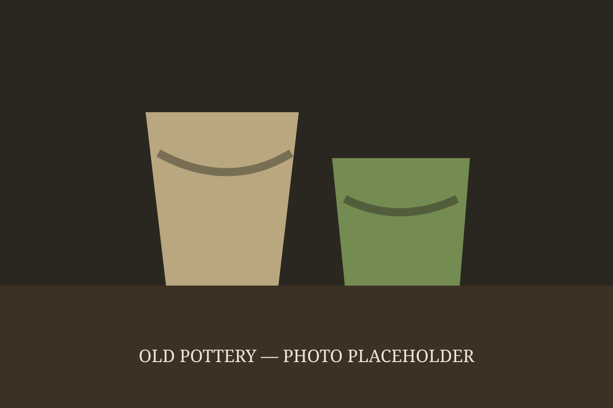

静かな店内で、今日の一皿をゆっくりと。

A small plate for today
スリランカの家庭の味を、
今日の野菜とともに。
Today's status
営業状況を読み込めませんでした。
Today's plate
Every day is a little different
野菜の旨味とココナッツ、香り高いスパイスを重ねた本日の一皿。
「今日はレンズ豆を少し濃いめに。野菜とココナッツの優しい味に仕上げました。」
— 店主より
About Beppo
野菜、スパイス、ココナッツを生かした一皿を、日々少しずつ変えて。Beppoは1日15食ほどを丁寧につくる、小さな食堂です。

静かな店内で、今日の一皿をゆっくりと。

料理とともに楽しむ、時間を重ねたうつわ。
Visit us
日々のメニューや店内の様子はInstagramでご案内しています。